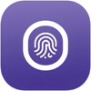

Stop exporting Excel/USB. Turn every scan into Odoo attendance — automatically.
Connect ZKTeco-compatible devices (ADMS/iClock PUSH) directly to Odoo. Keep a clean audit trail, manage device users & biometrics, and synchronize attendances without middleware.

Tip: Your device must be able to reach your Odoo URL (public domain, VPN, or tunnel). Connection is device-initiated, so you don’t need Odoo to “dial into” the device.
Built for HR accuracy & IT peace of mind
If you’re tired of:
- Manual exports (USB/Excel) and missing records.
- Vendor software dependency that doesn’t match your Odoo flow.
- Multiple devices/sites with timezone confusion and duplicated logs.
- Slow payroll closing because attendance data is not “clean” or traceable.
This module gives you direct PUSH integration + raw log retention + HR attendance synchronization — so you can trust the numbers when it’s time to pay people.
Choose RealTime push or use TransTimes/TransInterval to control when data is sent.
Uses device stamps (ATTLOG/OPERLOG/BIODATA...) to avoid re-downloading old data.
Only devices you confirm (by Serial Number) can push data into your Odoo.
Key features that customers actually buy for
Not “nice to have”. These are the features that remove daily pain and reduce payroll risk.
Push attendance to Odoo
Employees scan → device sends data → you keep a raw log record and later sync to hr.attendance.
Raw logs (audit trail)
Store the original device record (timestamp/status/verify mode). Duplicates are prevented at database level.
Multi-device & multi-location
Manage devices by company, location, and timezone. Keep consistent processing across sites.
Fine-grained upload settings
Control upload behavior using RealTime / TransTimes / TransInterval and TransFlag (what data tables to sync).
Device user management
Upload employees to selected devices (badge/barcode as PIN). Keep device users aligned with Odoo employees.
Biometric templates (as supported)
Store biometric templates uploaded by the device (fingerprint/face/vein/etc. depending on model). Includes template hashing to identify duplicates.
Command queue (track success/failure)
Send commands from Odoo to device, track return codes, and keep an execution history for troubleshooting.
Download attendance by date range
On-demand historical download (e.g., payroll closing) using a device command with StartTime/EndTime.
Step-by-step setup (no middleware)
- Install the module in your Odoo database.
- Create a device record with Serial Number, timezone, and location. Keep it in Draft until you’re ready.
- Confirm the device in Odoo to allow it to connect (whitelisting by Serial Number).
- On the device, go to Comm → Cloud Server Setting (or ADMS) and set:
- Server Address: your Odoo domain/IP reachable from the device
- Port: usually 8069 (or your reverse proxy port)
- Done. The device starts pushing data. You can also run Download Attendance by date range when needed.
What you’ll see after setup
- Online/offline status based on ping & last seen
- Raw logs flowing into Odoo
- Scheduled sync into HR Attendance (or manual sync)
- Command history with return codes for troubleshooting

Attendance data lifecycle
- Raw capture: device attendance records are saved as raw lines (unique per PIN/device/timestamp).
- Status mapping: status codes are mapped to check-in / check-out / unknown.
- HR sync: scheduler converts raw lines into hr.attendance for payroll-ready reporting.
- Traceability: keep the raw line linked to HR attendance for audits.
Device settings you control
- RealTime: push instantly when data is generated.
- TransTimes / TransInterval: schedule periodic uploads for bandwidth control.
- TransFlag: select which data categories the device auto-uploads.
- Stamps: ATTLOG/OPERLOG/BIODATA stamps support incremental sync.
Users & biometrics
- Upload employees to one or many devices (barcode/badge as PIN).
- Remote fingerprint enrollment from Odoo (guided at device).
- Biometric templates: store templates uploaded by the device (type depends on your model).
- Template hash helps identify duplicates and keep data clean.
Command & troubleshooting
- Command queue with Draft → Sent → Done/Error statuses.
- Return codes are stored for diagnosis (timeouts, device busy, invalid parameters...).
- On-demand downloads (e.g., ATTLOG by date range) for payroll closing.
Compatibility checklist
Device requirements
- Your device must support ADMS / iClock Push (often shown as Cloud Server Setting in Comm menu).
- Device should be in Time & Attendance mode (not “Access Control only”).
- Device must have network connectivity (Ethernet/Wi-Fi) and be able to reach your Odoo URL.
Odoo requirements
- Depends on hr_attendance.
- Works with Odoo Community / Enterprise (and Odoo.sh if devices can reach the domain).
- Recommended: dedicated domain/subdomain per database when multi-db hosting.
FAQ
Do I need middleware or a local PC?
No. The device pushes directly to Odoo via ADMS/iClock endpoints, and Odoo manages the queue + synchronization.
Do I need to open ports on the device?
The connection is device-initiated, so Odoo doesn’t “connect into” the device. You still need an Odoo URL reachable by the device network (public domain, VPN, or tunnel).
What happens if the device goes offline?
When the device reconnects, it can continue pushing data. You can also download attendance by date range for recovery.
Can I sync only a specific date range for payroll closing?
Yes. Use the download wizard to request ATTLOG between StartTime/EndTime (command-based).
Does it support biometrics like face or vein?
The module can store biometric templates uploaded by the device (type depends on your device capabilities). Remote enrollment from Odoo is available for fingerprint (guided at device).
Support that reduces risk
Attendance integration is mission-critical. If you sell this module, customers buy confidence as much as features. Add your support channels below so buyers feel safe to purchase.
Recommended support promise (copy/paste)
We provide:
• Setup guidance (device + Odoo)
• Compatibility check for your device model
• Troubleshooting for connection & synchronization
• Bug fixes within supported versions
Contact (replace with your real info):
• Email: support@yourcompany.com
• Sales: sales@yourcompany.com
• WhatsApp/Zalo: +84-xxx-xxx-xxx
Increase conversion tips
- Add a short demo video (60–120s).
- Include a “Compatibility checklist” (already above).
- Show 3 screenshots: Device list, Raw logs, HR Attendance result.
- Offer “We test your device model” — reduces buyer hesitation.
Security note
Only devices you confirm (by Serial Number) can push data. Keep unconfirmed devices blocked by default.
Changelog
1.0.0
• Initial release: ADMS/iClock PUSH integration, device management, raw attendance log storage, HR attendance synchronization, command queue, date-range download, employee upload wizard, remote fingerprint enrollment.